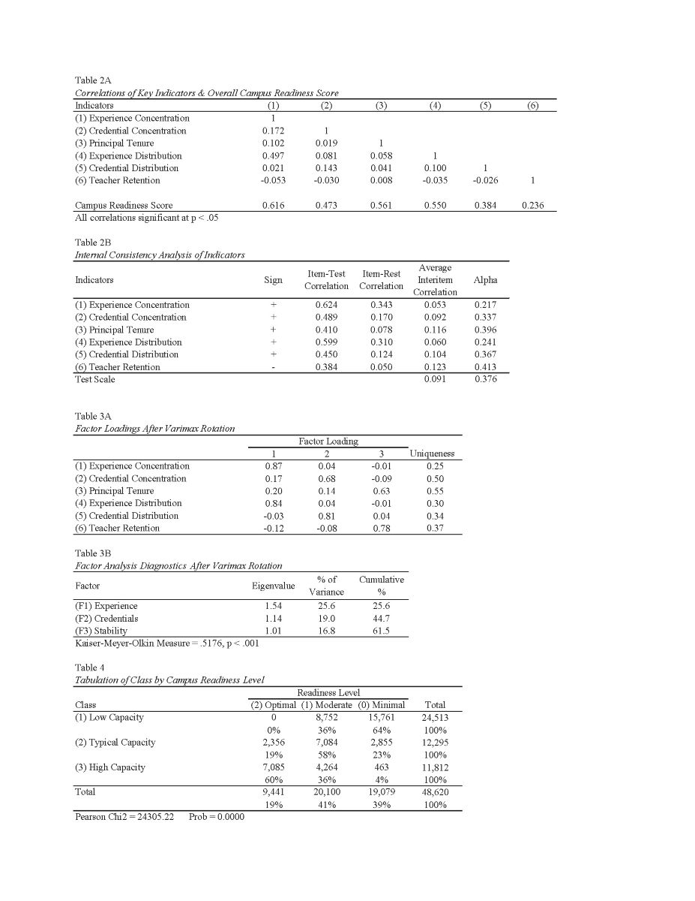
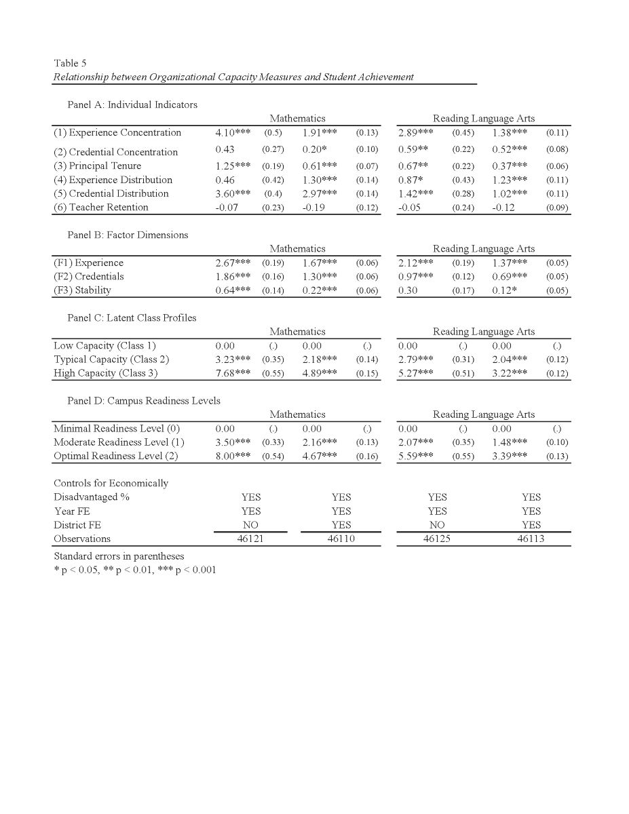

How the CCI is constructed
The Campus Capacity Index is built from six indicators across three theoretical dimensions, with each indicator designed to capture a distinct aspect of organizational capacity.
Teacher Experience Concentration
The proportion of teachers with substantial experience (≥5 years) — the threshold reflecting research showing teachers make their largest effectiveness gains in their first five years.
1 pt · 70–84.99% experienced
0 pts · <70% experienced
Teacher Experience Distribution
Equity in access to experienced teachers: whether schools avoid concentrating inexperienced teachers while distributing experienced staff equitably.
0 pts · at or above district average
Teacher Credential Quality
The proportion of teachers with full professional credentials, combining degree status with salary differentials — uncertified teachers typically command lower starting salaries and can be identified through compensation patterns.
1 pt · 90–94.99%
0 pts · <90%
Teacher Credential Distribution
Equity in the allocation of credentialed staff — maintaining high aggregate credential levels while distributing credentialed teachers evenly rather than concentrating them.
0 pts · at or below district average
Principal Tenure
Leadership stability via tenure at the current campus and total administrative experience, constructed through longitudinal analysis of TAPR data that identifies transitions through changes in reported experience patterns.
1 pt · 2 yrs at campus OR 5–7 yrs total
0 pts · <2 yrs at campus AND <5 yrs total
Teacher Retention
Longitudinal analysis flags unusual deviations in average teacher experience that suggest higher-than-normal turnover. Normal year-to-year changes range ±0.5 years; a 0.75-year threshold identifies atypical patterns.
0 pts · change ≥0.75 yrs (high turnover)
Three readiness levels
Based on their CCI scores, campuses are classified into three readiness levels corresponding to distinct organizational capacity configurations.
Minimal Readiness
Limited organizational capacity requiring comprehensive support.
Moderate Readiness
Developing capacity with targeted improvement opportunities.
Optimal Readiness
Strong organizational capacity supporting sustained effectiveness.
Distribution across 48,620 campus-year observations · mean CCI = 55.29, SD = 19.32, range 0–100.
Data & sample
Publicly available Texas Education Agency data spanning seven academic years (2017–2023), yielding 48,620 campus-year observations after exclusions.
Data sources
- Texas Academic Performance Reports (TAPR)
School-level staff characteristics, student demographics, and academic performance - Texas Education Directory (AskTED)
Locations, regions, counties, urbanicity classifications, and charter status - Final dataset
48,620 school-year observations from Texas public schools after exclusion criteria
Sample
- Schools: 8,605 unique campuses
- Time period: 2017–2023 (7 academic years)
- Geographic coverage: all 20 Education Service Center regions
- School types: city, suburban, rural, and town contexts
- Exclusions: alternative campuses and schools with incomplete data
Data quality
- Missing data & outliers
Systematic treatment and detection procedures - Consistency checks
Year-over-year validation of reported values - Longitudinal construction
Principal tenure identified through multi-year analysis
Sample characteristics
Major ESC regions: Houston 17.01% · Richardson (Dallas) 15.26% · Fort Worth 10.27% · all 20 regions represented.
Indicator means as a share of maximum possible score. Experience concentration is the scarcest form of capacity.
Student achievement & context
Research questions & analytical approach
Three research questions, each matched to a validation strategy — from internal structure to construct validity to criterion validity.
Do distinct dimensions of organizational capacity emerge from administrative indicators available in Texas public schools?
Approach — correlation analysis: examines the internal structure of the six indicators to identify patterns of association corresponding to the three theoretical dimensions. Item-total and item-rest correlations assess the coherence of the composite measure, while within-dimension versus cross-dimension relationships test discriminant validity.
Does the CCI demonstrate internal consistency and structural validity using complementary analytical approaches?
Approach — factor analysis + latent class analysis: factor analysis with varimax rotation validates the theoretical structure, examining KMO adequacy (>0.50), factor loadings with minimal cross-loadings, and eigenvalues supporting a three-factor solution. Latent class analysis serves as a robustness check, identifying naturally occurring organizational profiles through cross-tabulation with CCI readiness levels.
What is the relationship between organizational capacity measures and student achievement outcomes?
Approach — fixed-effects regression: models isolate capacity–achievement relationships across multiple specifications (individual indicators, factor scores, latent class profiles, CCI categories). A staged approach begins with year fixed effects for state-wide comparisons, then introduces district fixed effects for within-district comparisons, examining both mathematics and reading outcomes.
Empirical strategy for RQ3
Year fixed effects model
Upper-bound estimates: compares schools across the entire state, capturing the full range of capacity variation.
District fixed effects model preferred
Conservative estimates: compares schools within the same district, controlling for district-level policies and contexts.
Model terms
- Yit — achievement outcome (math or reading) for school i in year t
- ORGit — CCI capacity measure (indicators, factor scores, latent classes, or categories)
- Xit — standardized % economically disadvantaged students
- δt — year fixed effects (policy changes, temporal trends)
- δd — district fixed effects (unobserved district characteristics)
- εit — error term; standard errors clustered at the district level
Identification strategy
- District fixed effects — control for resource allocation, leadership approaches, and policy environments
- Year fixed effects — account for state-wide policy changes and testing variations
- Clustered standard errors — address within-district correlation in outcomes and practices
- Multiple specifications — test robustness across operationalizations of capacity
Key assumptions & interpretation
Conditional correlation: results represent conditional associations between organizational capacity and achievement, controlling for observed district and temporal factors. Within-district variation: the district FE model exploits capacity variation across schools within the same district, providing more conservative estimates. Staged approach: comparing year-only and district FE models assesses sensitivity to controls and reveals potential confounding from district-level factors.
Key variables at a glance
Outcomes
- Math & reading proficiency
% of students meeting grade-level standards on STAAR - Rationale
"Meets" represents federal ESSA expectations and TEA's primary benchmark for grade-level mastery
Key predictors
- Individual indicators — six component measures
- Factor scores — F1 Experience, F2 Credentials, F3 Stability
- Latent class profiles — Low, Typical, and High Capacity
- Categorical levels — Minimal (0–49), Moderate (50–69), Optimal (70–100)
Controls
- Socioeconomic
Standardized % economically disadvantaged students per campus - Fixed effects
Year FE for temporal trends; district FE for unobserved district characteristics
Preliminary results
Multi-method validation evidence across all three research questions, demonstrating robust construct and criterion validity.
Validation tables

Validation evidence
Factor analysis confirms the three-dimensional structure with clear loadings, while latent class analysis reveals organizational profiles that align with CCI readiness categories.

Criterion validity
Consistent positive associations across all capacity measures, with Optimal schools showing 4.67pp math and 3.39pp reading advantages over Minimal schools.
Key validation insights
Experience is king
Teacher experience concentration emerges as the strongest predictor across all specifications, validating institutional theory's emphasis on organizational memory. Strategic staffing beats spreading experienced teachers thin.
Math vs. reading sensitivity
Organizational capacity shows consistently stronger associations with mathematics than reading achievement, suggesting math instruction benefits more from organizational coherence and coordinated instructional practices.
District context matters
Estimates remain significant with district fixed effects — organizational capacity differences matter even among schools operating under the same district policies and resource constraints.
Multiple measures, same story
Convergence across four analytical approaches — individual indicators, factors, latent classes, and categorical levels — demonstrates the robustness of the CCI framework.
Takeaway
The CCI captures meaningful organizational differences that consistently predict student achievement across multiple analytical approaches. Experience concentration emerges as the critical factor, with estimates persisting even when comparing schools within the same district. These findings validate both the theoretical framework and the practical utility of the measure.
Relevance
What Paper 1 contributes to policy, theory, and practice — and where its limits lie.
Policy implications
- Complement outcome-focused accountability with organizational capacity assessment
- Target support to schools with low organizational capacity before crisis
- Develop multi-dimensional improvement strategies addressing all three factors
- Enable longitudinal tracking of capacity development without additional costs
- Scalable measure of organizational capacity using only administrative data
Theoretical contributions
- Extends institutional theory beyond isomorphism to effectiveness variation
- Demonstrates how institutional processes create measurable capacities
- Bridges the gap between organizational theory and practical measurement
- Provides a foundation for examining policy effects on organizational development
Limitations
- Some indicators rely on administrative proxies (e.g., salary differentials for certification status) rather than direct measures
- Longitudinal analysis of experience patterns provides an indirect measure of turnover
- Cross-sectional nature limits causal claims about capacity–achievement relationships